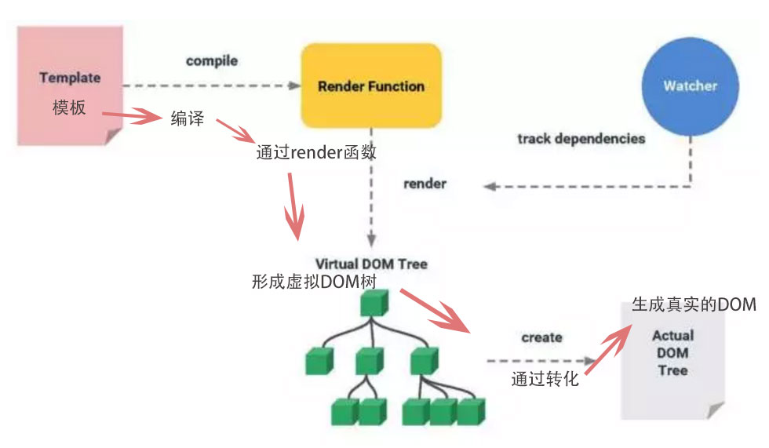
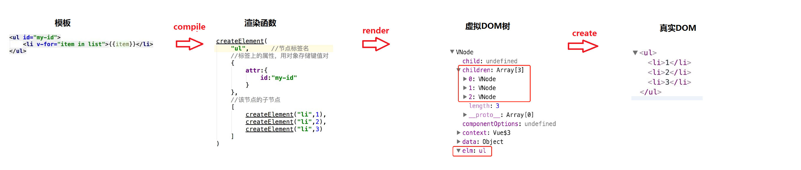
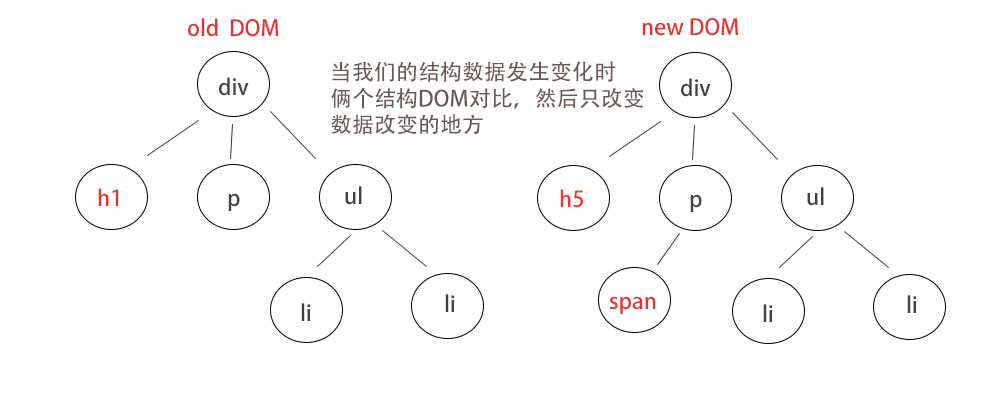
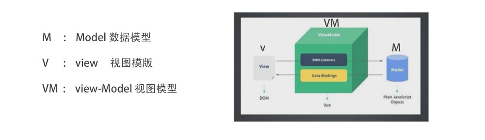
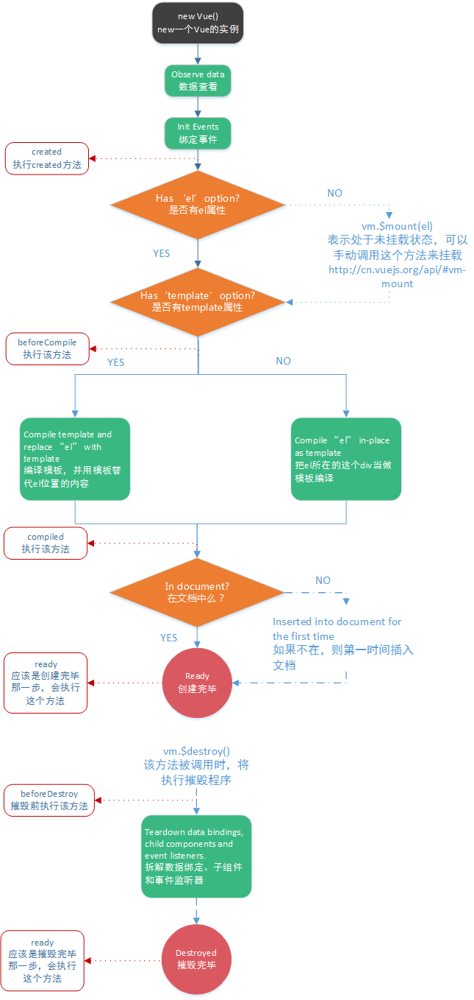

简介Vue.js
vue是什么
构建用户界面的渐进式框架
只关注视图层(view)
- 声明式渲染
Declarative
Rendering - 组件系统
Component
System - 客户端路由
vue-Router
Client-Side
Routing - 状态管理
VueX
Large Scale
State - 构建工具
Build
webpack
Vue中的两个核心点
响应的数据绑定
当数据发生变化 -> 自动更新视图
利用Object.definedProperty中的setter/getter代理数据，监听对数据的操作
组合的视图组件
ui页面映射为组件树
划分组件可维护、可重用、可测试

虚拟DOM
虚拟DOM(virtual DOM)
运行js的速度很快的，大量的操作DOM就会很慢。时常在更新数据后会重新渲染页面，这样 会造成在没有改变数据的地方也会重新渲染DOM节点，这样就造成了很大程度上的资源浪费。
利用在内存中生成与真实DOM与之对应的数据结构，这个在内存中生成的结构称之为虚拟DOM
当数据发生变化时，能够智能地计算出重新渲染组件的最小代价并应用到DOM操作上。
虚拟DOM转化图
虚拟DOM代码示意图
DOM对比图
MVVM模式
MVVM模式
声明式渲染
声明式
只需要声明在哪里(where),做什么(what),则无需关心如何实现(how)
命令式
需要以具体的代码表达式在哪里(where),做什么(what),如何实现(how)
例子：求数组中每一项的倍数
命令式
使用for循环拿出每一项,然后求知完成后，在载入到另一个数组中
声明式
使用map方法，关注如何求值
vue声明式渲染
初始化根实例，vue主动将数据绑定到DOM模板上
渐进式提纲
基础语法
- vue实例
- 模板语法
- 计算属性
- class和style绑定
- 条件和列表渲染
- 事件处理器
- 表单控件绑定
- 组件
高级进阶
- vue插件编写
- mixin混合
- 过渡效果
- 自定义指令
- vue-router:路由系统的使用
- vueX:状态管理器
构建工具
- nodejs:javascript运行环境
- webpack:模块管理和打包工具
- vue-cli:脚手架配置
指令
什么是指令
是一种特殊的自定义行间属性
指令的职责就是当其表达式的值改变时相应地将某些行为应用到DOM上
在Vue中，指令以V开头
内置的指令
- v-bind 动态的绑定数据 简写为:
- v-on 绑定事件监听器。简写为@
- v-text 更新数据，会覆盖已有结构
- v-html 可以解析数据中的html结构
- v-show 根据值的真假，切换元的display属性
- v-if 根据值的真假，切换的元素会被销毁，重建
- v-else-if 多条件判断，为真则渲染
- v-else 条件都不符合渲染
- v-model 在表单控件元素上创建双向数据绑定
- v-pre 跳过元素和子元素的编译过程
- v-once 只渲染一次，随后数据的更新不会重新渲染
- v-cloak 隐藏未编译的Mustache语法。css中设置[v-cloak]{display:none}
-
v-for 基于源数据多次渲染元素或模板块
v-for="val,index in object" （val ===每一个 index=== 下标)
:key="item.id" 默认不改变整体，而是替换元素。迫使其重新排序的元素，你需要提供一个 key 的特殊属性
自定义指令
除了核心功能默认内置的指令 (v-model 和 v-show)，Vue 也允许注册自定义指令
directives: {
focus: {
// 指令的定义
inserted: function (el) {
el.focus()
}
}
}
选项 / 数据
选项DOM
-
data 数据对象
data:data
data(){
return{
}
} -
computed 计算属性
computed: {
aDouble: function () {
return this.a * 2
},
} -
methods 事件处理器
methods: {
plus: function () {
this.a++
}
} -
watch 监听器
watch: {
a: function (val, oldVal) {
console.log(val, oldVal)
}
} -
watch:{ 深度监听
list:{
handler:function () {},
deep:true
}
},
生命周期钩子
生命周期
-
创建前状态
beforeCreate: function () {
可以在这加个loading事件
},
创建完毕状态
created: function () {
初始化，实现函数自执行
},
挂载前状态
beforeMount: function () {
},
挂载结束状态
mounted: function () {
发起后端请求，拿回数据，配合路由做一些事情
},
更新前状态
beforeUpdate: function () {
},
更新完成状态
updated: function () {
},
销毁前状态
beforeDestroy: function () {
你确认删除吗？当前组件已被删除，清空相关内容
},
销毁完成状态
destroyed: function () {
} - 
html模板
html模板
基于DOM的模板，模板都是可解析的有效的的HTML
插值
作用：替换实例上的属性值，当值改变时，插值内容处主动更新
元素的html：双大括号输出的是文本，不会解析HTML
例如：v-html="html.html"
let obj :{
html:"< div>hello wrok< /div>"
id:1
}
data:{
html: obj
}
v-bind:id="html.id"
使用JavaScript表达式：写简单的表达式
{{ 1 + 2 }} {{true ? 'yes' : none}}
字符串模板
template字符串
模板将会替换挂载的元素，挂载元素的内容都将被忽略
根节点只能有一个
将html结构写在一对script标签中，设置type = "x-template"
< script type="x-template" id="temp">
< div>< span>this is template< /span>< /div>
< /script>
var vm = new Vue({
template: "#temp"
})
模板-render函数
render函数
createElement(标签名,[数据对象],子元素)
render(createElement){
return createElement(
"ul",
{
class:{ yellow:true },
attrs:{ abc:123,id:1},
style:{ fontSize:"50px"},
domProps:{ innerHTML:"< li>我是html< /li>" }
},
[
createElement("li",{
class:{ red:true },
domProps:{ innerHTML:"1" }
}),
createElement("li",2),
createElement("li",3)
]
)
}
数据对象属性
style:{} //班的样式，和v-bind:style一样的API
attrs:{} //添加行间属性
domProps:{}, //DOM元素属性
on:{} //绑定事件
组件化开发
什么是组件
页面就是一个个部分组成的，比如导航，列表，弹窗，下拉菜单，页面只是这些组件的容器， 组件自由组合形成功能完整的界面，当不需要某个组件，或者想要替换某个组件时,可以随时可以 进行替换和删除，而不影响整个应用的运行。
组件的好处
提高开发效率
方便重复使用
简化调试步骤
提升整个项目的可维护性
便于协同开发
vue中的组件
vue中的组件是一个自定义标签，Vue.js的编译器为它添加特殊功能 vue也可以扩展原生的html元素，封装可重用的代码。
组件的基本构成
样式结构
行为逻辑
数据
全局注册
要注册一个全局组件，可以使用 Vue.component(tagName, options)
Vue.component('my-component', {
props:['list'],
template:`< ul class="list">
< li v-for="item of list" @click="selectValueHandle(item)">{{item}}< /li>
< /ul> `,
})
局部注册
你不必把每个组件都注册到全局。你可以通过某个 Vue 实例/组件的实例选项 components 注册仅在其作用域中可用的组件：
var Child = {
template: '< div>A custom component!< /div>'
}
new Vue({
components: {
// < my-component> 将只在父组件模板中可用
'my-component': Child
}
})
is特性
当使用 DOM 作为模板时 ，你会受到 HTML 本身的一些限制，因为 Vue 只有在浏览器解析、规范化模板之后才能获取其内容。尤其要注意，像 <ul>、<ol>、<table>、<select> 这样的元素里允许包含的元素有限制，而另一些像 <option> 这样的元素只能出现在某些特定元素的内部。
在自定义组件中使用这些受限制的元素时会导致一些问题，例如：
<table>
<my-row>...</my-row>
</table>
自定义组件 <my-row> 会被当作无效的内容，因此会导致错误的渲染结果。变通的方案是使用特殊的 is 特性：
<table>
<tr is="my-row"></tr>
</table>
data必须是函数
构造 Vue 实例时传入的各种选项大多数都可以在组件里使用。只有一个例外：data 必须是函数。
data(){
return {
.......
}
}
组件组合
组件设计初衷就是要配合使用的，最常见的就是形成父子组件的关系：组件 A 在它的模板中使用了组件 B。它们之间必然需要相互通信：父组件可能要给子组件下发数据，子组件则可能要将它内部发生的事情告知父组件。
在 Vue 中，父子组件的关系可以总结为 prop 向下传递，事件向上传递。父组件通过 prop 给子组件下发数据，子组件通过事件给父组件发送消息。

使用 Prop 传递数据
组件实例的作用域是孤立的。这意味着不能 (也不应该) 在子组件的模板内直接引用父组件的数据。父组件的数据需要通过 prop 才能下发到子组件中。
props: ['message']
单向数据流
Prop 是单向绑定的：当父组件的属性变化时，将传导给子组件，但是反过来不会。这是为了防止子组件无意间修改了父组件的状态，来避免应用的数据流变得难以理解。
在两种情况下，我们很容易忍不住想去修改 prop 中数据：
1、Prop 作为初始值传入后，子组件想把它当作局部数据来用；
定义一个局部变量，并用 prop 的值初始化它：
props: ['initialCounter'],
data(){
return {
counter: this.initialCounter
}
}
2、Prop 作为原始数据传入，由子组件处理成其它数据输出。
定义一个计算属性，处理 prop 的值并返回
props: ['size'],
computed: {
normalizedSize: function () {
return this.size.trim().toLowerCase()
}
}
Prop 验证
我们可以为组件的 prop 指定验证规则。如果传入的数据不符合要求，Vue 会发出警告。这对于开发给他人使用的组件非常有用。
要指定验证规则，需要用对象的形式来定义 prop，而不能用字符串数组：
props: {
// 基础类型检测 (`null` 指允许任何类型)
propA: Number,
// 可能是多种类型
propB: [String, Number],
// 必传且是字符串
propC: {
type: String,
required: true
},
// 数值且有默认值
propD: {
type: Number,
default: 100
},
// 数组/对象的默认值应当由一个工厂函数返回
propE: {
type: Object,
default: function () {
return { message: 'hello' }
}
},
// 自定义验证函数
propF: {
validator: function (value) {
return value > 10
}
}
}
$emit自定义事件
使用 $on(eventName) 监听事件
使用 $emit(eventName) 触发事件
下面一个示例
<div>
<button-counter v-on:increment="incrementTotal"></button-counter>
</div>
Vue.component('button-counter', {
template: '<button v-on:click="incrementCounter">{{ counter }}</button>',
},
methods: {
incrementCounter: function () {
this.$emit('increment')
}
},
})
new Vue({
methods: {
incrementTotal: function () {
this.total += 1
}
}
})
使用slot分发内容
使用一种方式混合父组件的内容与子组件自己的模板，这个过程称为内容分发。在子组件中使用特殊的 <slot>元素作为内容的插槽。这样会使组件的可扩展性更强
<slot>单个插槽
在自组件模板中有solt标签，被视为备用内容，在父组件不提供内容的情况下使用。如果父组件提供内容，则把整个内容 片段插入到slot所在的DOM位置，并替换slot标签本身。子组件模板中没有slot标签，父组件提供的内容会被抛弃
具名插槽
<slot> 元素可以用一个特殊的属性name来配置如何分发内容。可以使用一个匿名的slot，处理那些没有对应slot的内容
示例如下：
Vue.component('list',{
template: `
<div>
<ul>
<slot name="one"><li>1</li></slot>
<slot name="two"><li>2</li></slot>
<slot name="thrss"><li>3</li></slot>
<slot><li>4</li></slot>
</ul>
</div>`
})
<list>
<div slot="one"> Hello vue1</div>
<template slot="two">
<div> Hello vue2</div>
<div> Hello vue2</div>
<div> Hello vue2</div>
<div> Hello vue2</div>
<div> Hello vue2</div>
</template>
<div slot="thrss"> Hello vue3</div>
<div>Hello vue4</div>
</list>
作用域插槽
作用域插槽是一种特殊类型的插槽，用作一个 (能被传递数据的) 可重用模板，来代替已经渲染好的元素。
Vue.component('child',{
template: `
<div class="child">
<slot text="hello from child"></slot>
</div>`
})
在父级中，具有特殊特性 slot-scope 的 <template> 元素必须存在，表示它是作用域插槽的模板。slot-scope 的值将被用作一个临时变量名，此变量接收从子组件传递过来的 prop 对象：
<div class="parent">
<child>
<template slot-scope="props">
<span>hello from parent</span>
<span>{{ props.text }}</span>
</template>
</child>
</div>
如果我们渲染上述模板，得到的输出会是：
<div class="parent">
<div class="child">
<span>hello from parent</span>
<span>hello from child</span>
</div>
</div>
动态组件
通过使用保留的 <component> 元素，并对其 is 特性进行动态绑定，你可以在同一个挂载点动态切换多个组件：
var Home = {
template: '<p>Welcome home!</p>'
}
var vm = new Vue({
el: '#example',
data: {
currentView: Home
}
})
<component v-bind:is="currentView">
组件在 vm.currentview 变化时改变！
</component>
keep-alive
如果把切换出去的组件保留在内存中，可以保留它的状态或避免重新渲染。为此可以添加一个 keep-alive 指令参数：
<keep-alive>
<component :is="currentView">
非活动组件将被缓存！
</component>
</keep-alive>
子组件引用
尽管有 prop 和事件，但是有时仍然需要在 JavaScript 中直接访问子组件。为此可以使用 ref 为子组件指定一个引用 ID。
<user-profile ref="profile"></user-profile>
// 访问子组件实例
var child = parent.$refs.profile
开启vue
安装vue
全局安装 vue-cli
npm install --global vue-cli
创建一个基于 webpack 模板的新项目
vue init webpack my-project
安装依赖，走你
cd my-project
npm install
npm run dev
安装sass
npm install node-sass --save-dev
npm install sass-loader --save-dev
vue-cli生成的项目，已经默认加入了处理sass的loader
<style lang="scss" scope>
</style>
vue-cli目录结构及说明
├── build // 项目构建(webpack)相关代码 记忆：（够贱） 9个
│ ├── build.js // 生产环境构建代码
│ ├── check-versions.js // 检查node&npm等版本
│ ├── dev-client.js // 热加载相关
│ ├── dev-server.js // 构建本地服务器
│ ├── utils.js // 构建配置公用工具
│ ├── vue-loader.conf.js // vue加载器
│ ├── webpack.base.conf.js // webpack基础环境配置
│ ├── webpack.dev.conf.js // webpack开发环境配置
│ └── webpack.prod.conf.js // webpack生产环境配置
二、
├── config// 项目开发环境配置相关代码 记忆： （环配） 3个
│ ├── dev.env.js // 开发环境变量（看词明意）
│ ├── index.js //项目一些配置变量
│ └── prod.env.js // 生产环境变量
三、
├──node_modules// 项目依赖的模块 记忆： （依赖） *个
四、
├── src// 源码目录 5
1
│ ├── assets// 资源目录
│ │ └── logo.png
2
│ ├── components// vue公共组件
│ │ └── Hello.vue
3
│ ├──router// 前端路由
│ │ └── index.js// 路由配置文件
4
│ ├── App.vue// 页面入口文件（根组件）
5
│ └── main.js// 程序入口文件（入口js文件）
五、
└── static// 静态文件，比如一些图片，json数据等
│ ├── .gitkeep
剩余、
├── .babelrc// ES6语法编译配置
├── .editorconfig// 定义代码格式
├── .gitignore// git上传需要忽略的文件格式
├── index.html// 入口页面
├── package.json// 项目基本信息
├── README.md// 项目说明
文件引入公用的css
公用app.css
@import '/reset.css';
@import '/reset.css';
@import '/reset.css';
main.js
@import '@/assets/app.css';
如果不想加后缀名css
webpack.base.conf.js
extensions: ['.js', '.vue', '.json','.css'],
Vue-Router
通过管理url，实现url和组件的对应和通过url进行组件之间的切换
使用步骤
-
router --- index.js
引入Vue
import Vue from 'vue'
引入模块
import Router from 'vue-router'
import 导入组件
import HelloWorld from '@/components/HelloWorld'
做为Vue的插件
Vue.use(Router)
创建路由实例对象
export default new Router({
vue-router 默认 hash 模式 改变为history
mode:'history',
自定义路由激活状态的class名字
linkActiveClass:'is-active',
routes: [
{
定义路由路径
path: '/',
路径的名称
name: 'HelloWorld',
每个路由应该映射一个组件。
component: HelloWorld
给路由设置一个别名
alias: '/index',
二级子路由(如果有二级路由、父路由不需要name)
children:[
{path:'/study',component:study}
默认自路由(如果有二级路由、父路由不需要name)
{path:'',name:'HelloWorld',component:study}
]
},
{
无对应路由跳转
path: '*',
component: nofund404
重定向
redirect: '/index'
redirect: {path: '/index'}
redirect: {name: 'index'}
动态重定向 to = 目标路径对象
redirect:(to)=>{
if(to.path==='/123'){
return '/index'
}
}
}
]
}) -
入口文件 --- main.js
import Vue from 'vue'
import App from './App'
import router from './router'
Vue.config.productionTip = false
new Vue({
el: '#app',
router,
components: { App },
template: '<App/>'
})
vue-html
<div id="app">
使用 router-link 组件来导航.
通过传入 `to` 属性指定链接
默认会被渲染成一个 ` <a>` 标签
<router-link to="/foo">Go to Foo</router-link>
变量的形式
<router-link :to="index">Go to Bar</router-link>
对象形式
<router-link :to="{path:'/foo'}">foo</router-link>
name形式
<router-link :to="{name:'foo'}">foo</router-link>
不生成a标签，生成自定义标签
<router-link :to="/foo" tag="li">foo</router-link>
自定义属性，激活状态路由class类名
<router-link active-class="isactive">foo</router-link>
自定义路由事件状态
<router-link event="mouseover">foo</router-link>
二级组件
<router-link to="/index/study">foo</router-link>
默认二级导航
<router-link to="/index">foo</router-link>
精确匹配
<router-link exact">foo</router-link>
路由匹配到的组件将渲染在这里
<router-view></router-view>
渲染的组件可自定义class或样式
<router-view class="active"></router-view>
</div>
多个视图（例如：侧边栏）
-
router --- index.js
{
path:'document'
name:'Document'
多个视图
components:{
默认组件
default:document
name所对应的组件
slide:slide
},
},
-
vue-html
多个视图组件
<router-view></router-view>
<router-view name="slide"></router-view>
滚动行为（保留客户滚动条的位置）
-
router --- index.js
点击浏览器前进后退或点击导航切换
scrollBehavior(to,form,savePosition){
to 目标路由对象 = form 离开路由对象
savePositin 记录滚动条坐标 点击前进后退记录值
if(savePosition){
return savePosition
}else{
return {x:0,y:0}
}
也可以利用hash 锚地来定位到那个位置
if(to.hash){
return :{
selector: to.hash
}
}
}
-
vue-html
利用hash定位锚点
<router-view to="/index#abc"</router-view>
切换路由来定位到锚点的位置
<p id="abc"></p>
动态路径参数
-
router --- index.js
user （例如：个人中心）
{
tip 判断是否为vip userid
path: '/user/:tip?/:userid?',
?正则可以匹配一次或多次
component: user
} -
vue-html
<router-link :to="{path:'/user/'+item.tip+'/'+item.id"></router-link>
添加查询字符串
<router-link exact :to="{path:'',query:{info:'follow'}}">他的关注</router-link>
<router-link :to="{path:'',query:{info:'share',a:1}}">分享</router-link>
获取传入的字符串
<div>{{$route.query}}<div>
默认选择关注
<router-link :to="{path:'/user/'+item.tip+'/'+item.id,query:{info:'follow'}}">默认选择关注</router-link>
watch(){
监控$route 的变化
$route(){
.....
}
}
created(){
console.log($this.route )路由信息
找到对应的id向后台请求数据
$this.route.params.userid
}
-
对组件注入
通过在vue根实例的router配置传入router实例
$router router实例对象
$route 当前激活的路由信息对象
beforeRouteEnter() 进入组件前钩子函数
beforeRouteLeave() 离开组件前钩子函数
-
路由信息对象
一个路由信息对象表示当前激活的路由的状态信息,每次成功的导航后都会产生一个新的对象
path 字符串，对应当前路由的路径
params 对象，包含动态路由参数
query 对象，URL查询参数
hash 字符串，当前路由的hash值
fullPath 字符串，URL包含查询参数和hash的完整路径
matched 数组，包含当前路由的所有嵌套路径片段的路由记录
name 字符串，当前路由的名称
-
过渡动效
提供了transition的封装组件，添加过渡动效
添加删除css类名
v-enter: 定义进入过渡的开始状态
v-enter-active: 定义进入活动状态
v-enter-to: 定义进入的结束状态
v-leave:定义离开过渡的开始状态
v-leave-active:定义离开过渡的活动状态
v-leave-to:定义离开过渡的结束状态
使用name属性改变类名的前缀过渡模式
in-out: 新元素先进行过渡，完成之后当前元素过渡离开
out-in: 当前元素先进行过渡，完成之后新元素过渡进行 -
可设置所对应的name
mode="过渡模式"
<transition mode="in-out">
<router-view></router-view>
</transition>
<style>
v-enter{ opacity:0}
v-enter-to{ opacity:1}
v-enter-active{ transition:1s}
v-leave{ opacity:0}
v-leave-to{ opacity:1}
v-leave-active{ transition:1s}
</style>
-
左右过渡动效
routes: [
{path: '/',name: 'index',
index为每个组件的识别信息
meta: {index: 0,title:'index'},
component: index}
]
watch:{
$route(to,from){
if(to.meta.index< from.meta.index){
this.names = 'right'
}else{
this.names = 'left'
}
}
},
data(){
return{
names:'left'
}
}路由元信息
在路由配置中meta可以配置一些数据，用在路由信息对象中
访问mete中的数据：$route.meta -
<transition :name="names">
<router-view class="center"></router-view>
</transition>
<style>
对应name属性 === left
.left-enter{ transform: translateX(100%);}
.left-enter-to{ transform: translateX(0);}
.left-enter-active{ transition:1s;}
.left-leave{ transform: translateX(0); }
.left-leave-to{ transform: translateX(-100%);}
.left-leave-active{ transition:1s;}
对应name属性
.right-enter{ transform: translateX(-100%);}
.right-enter-to{ transform: translateX(0);}
.right-enter-active{transition:2s;}
.right-leave{ transform: translateX(0);}
.right-leave-to{ transform: translateX(100%);}
.right-leave-active{transition:1s;}
</style>
-
编程式导航
back 回退一步
forward 前进一步
go 指定前进回退步数
push 导航到不同url,向history栈添加一个新的记录
replace 导航到不同url，替换history栈中当前记录
<input value="后退" @click="backHandle">
<input value="前进" @click="forwardHandle">
<input value="前进2步" @click="goHandle">
<input value="后退2步" @click="fgoHandle">
<input value="跳到指定位置push" @click="pushHandle">
<input value="替换当前的记录replace" @click="replaceHandle">
-
methods:{
backHandle(){
this.$router.back();
},
forwardHandle(){
this.$router.forward();
},
goHandle(){
this.$router.go(2);
},
fgoHandle(){
this.$router.go(-2);
},
pushHandle(){
this.$router.push('/user');
},
replaceHandle(){
this.$router.replace('/user');
}
}
-
导航钩子函数
导航发生变化时，导航钩子主要用来拦截导航，完成跳转或取消
执行钩子函数位置
route全局
单个路由
组件中
钩子函数
router实例上：beforeEach、afterEach
单个路由中：beforeEnter
组件内的钩子beforeRouteEnter、beforeRouteUpdate、beforeRouteLeave
钩子函数接收的参数
to: 要进入的目标 路由对象 到那里去
form: 正要离开导航的路由对象 从哪里来
next: 用来决定跳转或取消导航
-
route全局
需要登录判断
{
path: '/me',
component: me,
在导航文件中设置
beforeEnter(to,form,next){
next('/login')
},
login需要登录
meta: {
index: 5,
login: true,
title: 'me'
}
}
router.beforeEach((to,from,next)=>{
if(to.meta.login){
next('/login')
}else {
next()
}
})
设置title
router.afterEach((to,from)=>{
if(to.meta.title){
window.document.title = to.meta.title
}else {
window.document.title = 'xiaoqiang'
}
})
-
组件中route
组件内的钩子
进入的钩子
beforeRouteEnter
二级导航更新时的钩子函数
beforeRouteUpdate
离开时的钩子函数
beforeRouteLeave
钩子函数接收的参数
to: 要进入的目标 路由对象 到那里去
form: 正要离开导航的路由对象 从哪里来
next: 用来决定跳转或取消导航
-
进入的钩子
beforeRouteEnter(to,form,next){
next(vm) =>{
vm === this
}
}
二级导航更新时的钩子行数 beforeRouteUpdate(to,form,next){
next();
}
离开时的钩子函数
beforeRouteLeave(to,form,next){
next();
}
-
vue插件
新建一个lib插件文件
lib里面新建一个utils.js
在main.js里配置
引入插件模块
import Utils from '@/bil/utils'
做为插件全局使用
Vue.use(Utils)
使用插件
this.$local -
utils.js
let local = {
save (key, value) {
localStorage.setItem(key, JSON.stringify(value))
},
fetch (key) {
return JSON.parse(localStorage.getItem(key)) || {}
}
}
export default {
install: function (vm) {
vm.prototype.$local = local
}
}
-
登录状态后跳转的组件
router.beforeEach((to, from, next) => {
判断是否需要登录
if(info.login){
next()
}else {
router.push({
path:'/login',
query:{
传入登录后跳转的路径
redirect: to.path.slice(1)
}
})
}
}) -
获取传过来的path跳转路径
let redirect = this.$route.query.redirect
判断是否有跳转路径
if(!redirect){
redirect = 'project'
}
this.$router.push({
path: '/'+redirect
})
-
Vue面包屑
watch:{
$route(){
this.flag = flags[this.$route.path.slice(1)]
}
}
beforeRouteEnter(to,form,next){
next((vm)=>{
vm.flag = flags[vm.path.slice(1)]
})
}
-
数据
let flags = {
project:'我的项目',
workbench:'工作台',
doc:'我的文档'
}
data(){
return:{
flag = ''
}
}
-
vue懒加载
把不同路由对应的组件分割成不同的代码块，然后当路由被访问的时候才加载对应组件
Vue异步组件
{
components:{
custom:(resolve,reject) => {}
}
}
weboack代码分割功能
require.ensure代码分块
resolve(require(依赖,回调函数,[chunk名字]))
import函数
-
组件懒加载 (可ajax加载后)
components: {
路由懒加载
headerNav:(resolve) => {
setTimeout(() => {
resolve(require('@/components/header'))
}, 2000)
}
}
let Layout = (resolve) => {
同时加载俩个(打包到一个js)
return require.ensure([], () => {
resolve(require('@/views/layout'))
})
}
let Doc = (resolve) => {
import懒加载
return require.ensure([], () => {
resolve(require('@/views/backend/doc'))
}, "abc")
}
let Workbench = (resolve) => {
return require.ensure([], () => {
resolve(require('@/views/backend/workbench'))
}, "abc")
}
let Doc = (resolve) => {
return import('@/views/backend/doc')
}
vue打包
-
命令行
npm run build
在config---index.js配置资源路径
配置自己的路径
assetsPublicPath: '/dist/',
兼容IE
npm install --save babel-polyfill
main.js
import "babel-polyfill"; -
github/服务器
git add .
git commit -m '.....'
git remote add origin https://github.com/zhaoqiangq/dist.git
报错commit
git config core.autocrif false
find / -name dist
cd ........
git clone https://github.com/zhaoqiangq/dist.git
git pull
vuex
-
vuex是什么
专为Vue.js应用程序开发的状态管理模式
采用集中式储存管理应用的所有组件状态
以相应的规则保证状态以一种可预测的方式发生变化
状态
组件内部状态：仅在一个组件内使用的状态(data字段)
应用级别状态：多个组件共用的状态
什么情况下使用Vuex
多个视图依赖于同一状态
来自不同视图的行为需要变更同一状态 -
安装vue
安装模块
npm install vuex --save
新建store---index.js
import Vue from 'vue'
import Vuex from 'vuex'
作为插件
vue.use(Vuex)
let store = new Vuex.Store({
})
export default store
main.js
import store from './store'
new Vue({
el:'#app',
router,
store,
template:'',
components:{App}
})
-
Vuex核心概念
store:类似容器，包含应用的大部分状态
一个页面只能有一个store
状态储存是响应式的
不能直接改变store中的状态，唯一途径显示地提交mutations
state:包含所有应用级别状态的对象
getters:在组件内部获得store中状态的函数
mutations:唯一修改状态的事件回调函数
actions:包含异步操作、提交mutations改变状态
modules:将store分割成不同的模块 -

-
store实例
let store = new Vuex.Store({
state:{
count:100
},
getters:{
filterCount(state){
return state.count >= 120? 120 :state.count
}
},
mutations:{
payload接受的参数
addIncrement(state,payload){
state.count += payload.n;
}
}
异步操作
actions:{
addAction(context){
setTimeout(()=>{
context.commit('addIncrement',{n:5})
context.dispatch('textAction',{text:'测试'})
},1000)
}
textAction(context,obj){
console.log(obj)
}
}
}
})
-
组件中获取roux.store
export default:{
computed:{
num(){
return this.$store.state.count
},
num2(){
return this.$store.getters.filterCount
}
},
methods:{
addHandle(){
改变状态，提交mutation addIncrement
this.$store.commit('addIncrement',{
n:5
})
}
异步操作 提交一个action
delHandle(){
this.$store.dispatch('addAction')
}
}
}
-
vuex辅助函数
mapState
mapGetters
mapMutations
mapActions
代码分割
let selectModule = {
state:{},
mutations:{},
}
let store = new Vue.Store({
state:{},
mutations:{},
modules:{
selectModule
}
})
取值加上模块
this.$store.state.selectModule.title
-
import {mapState,mapGetters,mapMutations,mapActions} from 'vuex'
<input @click="deHandle({de:5})">
export default{
computed:{
...mapState(['count'])
...mapGetters({
num2:'filterCount'
})
},
methods:{
...mapActions({
addHandle:'addAction'
})
...mapMutations({
delHandle:'deIncrement'
})
},
}
-
Axios
基于Promise用于浏览器和nodejs的与服务器通讯库
特性
支持Promise API
拦截请求和响应
转换请求和响应数据
取消请求
自动转化JOSN数据
npm
npm install axios vue-axios --save
Mock模拟数据
http://easy-mock.com
-
使用axios
export default{
created(){
axios.get('url',{
params:{
abc:'111'
}
})
axios.post('url',{
abc:'111'
})
.then((response) =>{
})
.catch((error)=>{
})
}
}
-
自定义请求实例
创建
axios.create(config)
配置
{
baseURL:'',
timeout:1000,
headers:{},
responseType:'json',
params:{},
transformRequest:[],
transformResponse:[],
validateStatus:function(){},
cancelToken
}
application/x-mmm-form-urlencoded
同时请求二条数据
created(){
function http1(){
return HTTP.get('test-axios')
}
function http1(){
return HTTP.get('test-axios')
}
axios.all([http1(),http2()])
.then(axios.spread((res1,res2)=>{
}))
.catch((error)=>{
})
} -
安装axios
npm install axios vue-axios --save
main.js
import Axios from 'axios'
import VueAxios from 'vue-axios'
Vue.use(VueAxios,Axios)
使用全局axios
this.$http.get(url)
.then((res)=>{})
.catch((error)=>{})
组件中
import axios from 'axios'
var HTTP = axios.create({
公共的url主路径
baseURL:'公用url',
连接超时中断请求 1==1毫秒
timeout:1000,
自动转化为json数据对象
responseType:'json',
查询字符串在url后面
params:{
book:'123'
}
请求头传入参数
headers:{
'custome-header':'miaov'
}
})
export default {
created(){
HTTP.get('url/路径')
.then((response)=>{
})
.catch((error)=>{
})
}
}